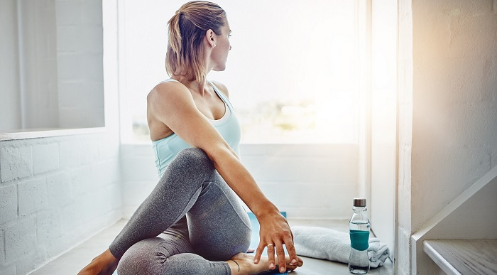
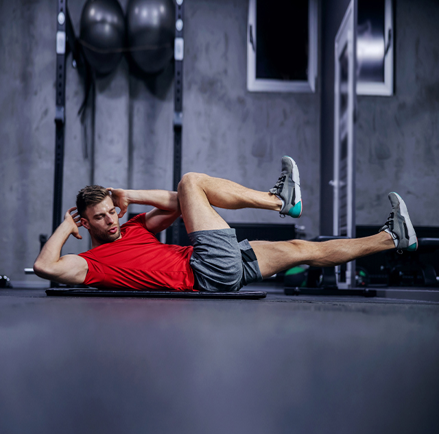

A frequência, a duração, a intensidade e o tipo de desporto praticado variam ao longo da vida.
Mas uma coisa é certa: praticá-lo é essencial em qualquer faixa etária.
Os benefícios do exercício físico na saúde são vários: controlo do peso, combate de algumas doenças e condições de saúde, aumento dos níveis de energia ou melhoramento do sono.
Para que não o deixe de praticar, a OMS elaborou um conjunto de recomendações por faixas etárias, no qual refere quais os melhores tipos de desporto a praticar em cada uma.
Para os mais novos, a atividade física inclui tudo o que seja brincar, jogar jogos, fazer desporto, método de deslocação (caminhar ou de bicicleta) ou mesmo a realização de algumas tarefas domésticas. Tal sempre num contexto familiar, escolar ou comunitário, refere a OMS.
Benefícios do exercício físico nestas idades: desenvolvimento de tecido musculosquelético saudável (ossos, músculos e articulações),desenvolvimento de um sistema cardiovascular saudável (coração e pulmões), controlo da ansiedade e depressão e auxílio no desenvolvimento social e de autoestima.
Nos adultos, a atividade física relaciona-se com o tempo de lazer gasto na prática de exercício, método de deslocação (caminhar ou andar de bicicleta), tarefas domésticas, jogos ou prática de desporto, explica a OMS.
Tempo médio recomendado: 150 minutos de atividade aeróbica moderada ao longo da semana ou 75 minutos de intensidade vigorosa ao longo da semana.
De acordo com a OMS, a atividade física nesta faixa etária é semelhante à dos adultos. Inclui o tempo de lazer gasto na prática de exercício, o método de deslocação (a caminhar ou a andar de bicicleta), tarefas domésticas, jogos ou prática de desporto.
Adultos mais velhos, com mobilidade reduzida, devem realizar atividade física para aumentar o equilíbrio e evitar quedas, 3 ou mais dias por semana.
Benefícios do exercício físico nestas idades: redução do risco de morte por doença cardíaca coronária, pressão arterial alta, acidente vascular cerebral, diabetes tipo 2, cancro do cólon e da mama, melhoria da aptidão cardiorrespiratória e muscular.
Pode também ler: 10 Exercícios que pode fazer em casa.
